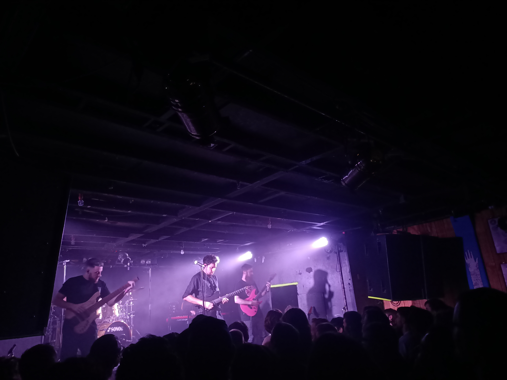

Evening
On Thursday the 9th of February 2023, I saw Plini perform at San Fran in Wellington, NZ.

Plini is a young prog-metal guitarist from Sydney, Australia. I discovered him through a Moshtix email about upcoming concerts. Upon my first listen to his music, I was impressed with the emotion captured in his guitar playing, which captivated me to see him live.
My favourite album (so far) is Impulse Voices.
Band
Plini records most instruments as a solo artist, on this tour he was backed by:
Plini Roessler-Holgate - guitar
Unknown - drums
Unknown - bass
Unknown - guitar
Unknown - synth
San Fran
This was the most people I have ever seen at San Fran, the line to the venue went out the door and around the corner. Although, queuing beer lines didn’t seem to take too long, and neither did the balcony feel overcrowded.
Sound was managed well, it always is at San Fran.
The crowd mainly consisted of staunch bogans. At the start, a friend and I tried to move closer to the front, to which two massive bogans (fuckwits) stood their ground and didn’t let us past. We ended up finding a better view elsewhere.
Beer was around $13 a pint.
Performance
Plini’s music is melodic, technical, instrumental and fast. As mentioned earlier, what sets him apart from other guitarists is his ability to capture emotion in this way. The amazing part is; the complexity of his music still shines through in live performances.
His backing band was incredible! I was particularly impressed by the drummer and bassist. The drummer didn’t skip a beat the whole performance and supplemented the emotion Plini captures in his music. The bassist did some crazy tapping and played with such speed, but still laid down a robust musical tapestry. The synth player also performed some incredible solos, particularly in the encore set/jams.
Plini’s backing guitarist must have been a close friend because the chemistry between them was noticeable. These two would often perform solos that spoke to each other, almost as if having a conversation on stage. Their musical support for one another, during the show, often settled with eye contact and a smile (almost as if they were lovers? - no offense intended…).
An interesting aspect of Plini’s performance was, before the last song, Plini requested that the audience does not ask for an encore. Instead, Plini wanted the audience to stay silent and ensured they would return to the stage once “they are ready”. I’ve never seen a band do this before, it was quite cool, something different. The silence lasted for about five minutes before the band came back.
Thoughts
It was great to see Plini perform. The musical talent in his instrumental songwriting and the ability to perform it live is astonishing.
I was a bit upset with the crowd, bogans make for the worst audience. There was little movement, no one was grooving to the music, and everyone just stared, as if they were receiving a guitar lesson or something. Additionally, it felt like bumping into others or touching them accidentally stirred anger within the receiver. Moving freely amongst the crowd seemed to be against the “bogan code”, few people were doing it.
That aside, it was my last night with a friend in Wellington before leaving for travel. It was great catching up with him :)
Final Rating
Band: 2/5 (not bad)
Venue: 3/5 (good)
Evening: 3/5 (good)
Rating System
1 (bad); 2 (not bad); 3 (good); 4 (really good); 5 (amazing)